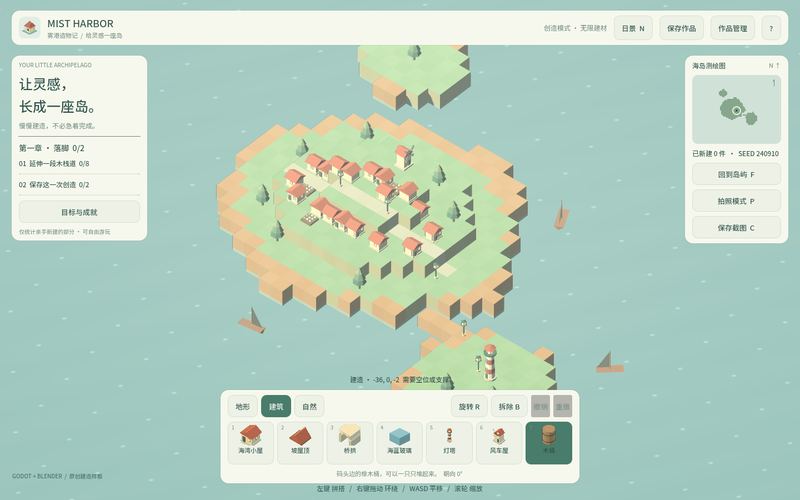
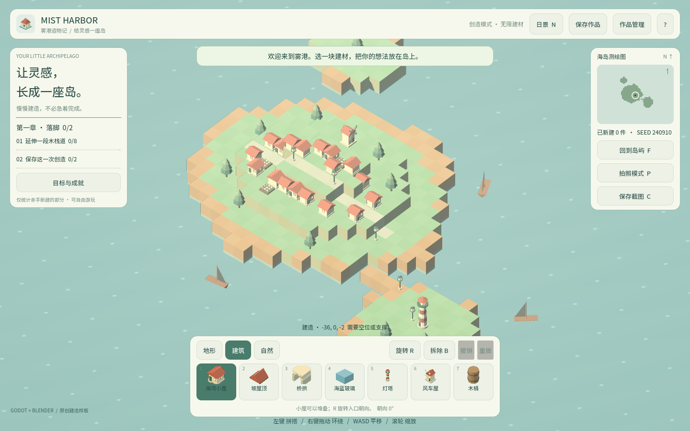
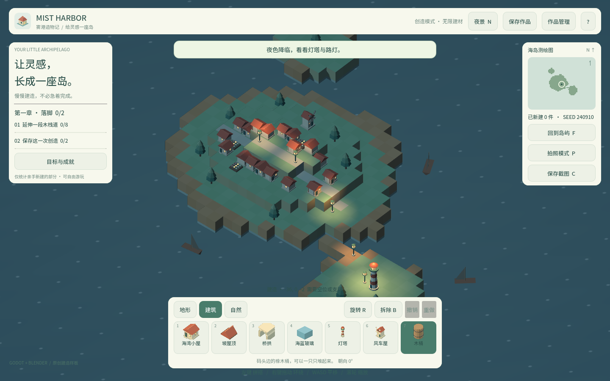

卷 1 · 第 08 章 观感设计："高级感"从哪来，又怎么丢的
本章目标：把"看起来廉价"这种模糊感受，拆成可检查的四类问题：
配色、字体、图标、密度——每类都配本实训真实翻车案例与修复方法。
对应任务：T28–T32 | 对应提交：fe21139（观感修复）
8.1 先看配色：一套值，全场复用
| 变量 | 值 | 用在哪 |
|---|---|---|
| --- | --- | --- |
INK | #2d514b | 主文字 |
MUTED | #789087 | 次要文字、说明 |
PAPER | #f7f8ed | 面板底色 |
ACCENT | #497c6b | 选中、强调 |
| 场景环境 | 背景 #cfdfd6 / 环境光 #dceae0 / 阳光 #ffe6bd | build_world.gd |
规则：新增 UI 不许自己编颜色，只能从这五个值里取（或明确派生，如 color.darkened(0.08)）。
配色一旦散开，界面立刻"拼贴感"。
8.2 字体：一个真实的"变瘦 1.5%"事故
现象：改完中文文案后，界面"好像没原来精致了"。
取证（用 fontTools 对比字形坐标）：
小: old bbox 30,-82,978,828
小: new bbox 42,-72,966,816 ← 同样是 3 个轮廓、43 个点，但整体内缩 12–16/1000原因：字体是子集字体（只打包用到的字）。我为了补缺字，把整包重新子集了一遍，
新子集的字形比原版窄约 1.5%——字重与字距同时变轻，于是"廉价感"就来了。
修法（现在的标准流程）：保基准 + 补缺字
1. 原版子集存为基准：tools/fonts/harbor-sc-base.ttf
2. 只把"基准里没有的字"从源字体（Noto Sans SC，可变字体需先实例化 wght=400）子集出来
3. 合并进基准 → 原有字形字节级不变python tools/build_font_corpus.py # 保基准 + 只补缺字，并报告补了几个验证：小/屋/灯/塔 坐标 IDENTICAL；游戏文案缺字扫描 MISSING_TOTAL=0。
📌 规矩：任何中文文案增删改，都要跑一次
build_font_corpus.py。
顺带两个坑：源字体是可变字体（要先实例化），fontTools 合并布局表会报VarStore错（要先剥离）。
8.3 图标：手绘 vs GLB 缩略图，以及"塑料感"
本实训把建材图标换成了运行时渲染的 GLB 缩略图（model_thumbnail.gd），好处是加建材零图标代码。
但第一版翻车了：
| 第一版（塑料感） | 修好之后 | |
|---|---|---|
| --- | --- | --- |
| 环境光 | 白色 × 0.9 | #dceae0 × 0.55 |
| 主光 | 白 × 2.6 | 暖阳 #ffe6bd × 0.95 |
| 补光 | 白 × 1.1 | 冷色 #cfe0ea × 0.32 |
| 色调映射 | 默认 | 线性（与场景一致） |
| 相机 | 透视 + 自定角度 | 正交 + 与游戏同角度（yaw/pitch 0.72） |
| 画质 | 96px 无抗锯齿 | 192px + 4× MSAA |
根因：图标舞台的光比与游戏场景完全不一致 → 模型像棚拍塑料玩具，而不是"场景里的小物件"。
修法口诀：图标的打光必须抄场景的。build_world.gd 里是什么光，缩略图就用什么光。
逃生开关：
scripts/model_thumbnail.gd顶部const ENABLED := true改成false，
一键回退到手绘图标。
8.4 密度：信息层级比"多"更重要
真实案例：目标面板一度塞了 9 条目标（原本 6 条），立刻显得杂乱。
修法：面板只显示当前章节（2–4 条），完整进度收进「目标与成就」面板。
三条密度原则：
- 一屏只回答一个问题（"我现在该做什么" vs "我总共做了多少"不要挤在一起）
- 次要信息可收起，不要平铺
- 进度用条形表达，不用长句
8.5 观感回归检查单（每次 UI 改动后过一遍）
- [ ] 新增颜色是否来自五个变量？（不许自编）
- [ ] 中文文案改动是否跑了
build_font_corpus.py？缺字扫描是否为 0？ - [ ] 新图标打光是否与
build_world.gd一致？是否开了 MSAA？ - [ ] 面板条目数是否超过 5 条？超了是否可收起？
- [ ] 截图对比：改动前后的同一画面放在一起看（可用
course_capture.py产出）
🌩 在云端 agent（web-cb）里是什么样
| 🖥 本地路线 | 🌩 云端 agent（web-cb） | |
|---|---|---|
| --- | --- | --- |
| 观感问题定位 | 本地跑游戏/截图对比 | 云端预览同样截图对比；建议仍用 course_capture.py 产出同一视角 |
| 字体工具 | 本地跑 build_font_corpus.py | 平台内执行同一命令（纯 Python 标准库 + fontTools） |
| 图标渲染 | 本地 GPU/软渲染 | 云端预览是 WebGL，MSAA 与光比表现一致 |
| 风险 | 本地显卡差异 | 云端预览环境更接近最终 Web 成品——观感验收应优先在 Web 成品上看 |
🌩 一句话：观感的最终裁判是 Web 成品 + 截图对比，因为学员看到的就是它。
8.6 常见坑速查（本章）
| 现象 | 原因 | 处理 |
|---|---|---|
| --- | --- | --- |
| 中文变方框 | 子集缺字 | 跑 build_font_corpus.py |
| 字看着变轻/变瘦 | 整包重子集，字形换了 | 保基准 + 只补缺字 |
| 图标发白、塑料感 | 光比与场景不一致 | 抄 build_world.gd 的灯光参数 |
| 图标锯齿 | 分辨率低/没开 MSAA | 192px + MSAA_4X |
| 面板显得杂 | 信息平铺太多 | 按章节收起，只留当前 |
8.7 本章作业
- 用 fontTools 对比你机器上任意两个中文字形，写出
contours / 点数 / bbox三项 - 改一条中文文案 → 跑字体工具 → 确认缺字扫描为 0
- 把
ModelThumbnails.ENABLED改成false看一版手绘图标，再改回来，写下你的偏好与理由 - 挑一个面板，按 8.4 三条原则给出一条改进建议
🎓 教学提示（给教师 / 直播主）
- 概念锚点：观感不是玄学，是四类可检查项（配色/字体/图标/密度）。
- 最强演示：A/B 盲测。把"塑料感图标"与"修好后的图标"并排，让观众投票——
再公布哪边是哪边，印象极深。
- 高频误解：学生觉得"观感靠审美天赋"。用 8.2 的数值取证（bbox 缩小 16/1000）
证明它可以被量化。
- 讨论题：为什么"图标打光要抄场景"？（因为玩家会把图标与场景里的实物做视觉对照）
- 批改要点：作业 2 必须给出缺字扫描结果（数字），只说"跑过了"不给分。
🖼 本章图集



📹 录屏分镜（10 分钟）
| 时间 | 画面 | 解说词要点 |
|---|---|---|
| --- | --- | --- |
| 00:00–01:20 | 配色五值表 | "不许自编颜色。" |
| 01:20–03:30 | 字体事故取证（bbox 对比） | "字变瘦了 1.5%，肉眼说不清，数字说得清。" |
| 03:30–05:30 | 图标 A/B 对比（塑料感 vs 修好） | "打光抄场景，质感就对了。" |
| 05:30–07:00 | 面板密度前后对比 | "一屏只回答一个问题。" |
| 07:00–08:40 | 过一遍观感检查单 | "改完 UI 就照这五条打勾。" |
| 08:40–10:00 | 作业 + 预告（卷 2：Godot 工程） |
🎬 视频位（待录制）
把录好的视频放到course/media/video/08/（mp4 / webm / mov），重新执行 python tools/course_build.py 即会自动内嵌；首帧默认用本章第一张截图作为封面。分镜脚本见上一节。🖼 配图清单
| 文件名 | 内容 | 生成方式 |
|---|---|---|
| --- | --- | --- |
08-dock-building.png | 建筑分类（缩略图图标现状） | python tools/course_capture.py --chapter 08 |
08-barrel-icon.png | 木桶被选中（看缩略图与提示） | 同上 |
08-night-glow.png | 夜景灯光（与图标打光对照） | 同上 |
🎥 直播脚本（L6，15 分钟，建议整场做 A/B 盲测）
- 开场盲测：两组截图（旧图标 / 新图标、旧字体 / 新字体），观众投票
- 揭晓 + 取证：用 fontTools 输出与灯光参数表解释差异
- 现场修一个：挑一条真实观感问题现场改（例如把某个自编颜色改回变量）
- 收尾：发"观感检查单"
❓ 本章 FAQ
Q：我没有美术基础，能做好观感吗？
A：能。本章的四类问题全部可检查、可量化；本实训的两次翻车也是靠数据定位的，不是靠"眼光"。
Q：字体工具一定要 fontTools 吗？
A：本实训用它做子集与合并。你可以换成任何工具，但"保基准 + 只补缺字"的原则不能变。
Q：Web 上看到的和本地不一致？
A：以 Web 成品为准（学员看到的就是它）。差异通常来自渲染后端与 MSAA，按 8.5 检查单逐项排除。